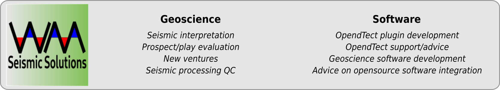

+++
title = "WMPlugins-Docs"
linkTitle = "WMPlugins-Docs"
+++
{{< blocks/cover title="WMPlugins - free, open source plugins for OpendTect" image_anchor="top" height="auto" color="orange" >}}
{{< /blocks/cover >}}
{{% blocks/lead color="primary" height="auto" %}}
This is the documentation site for various plugins and external attribute scripts I have developed for the open source seismic interpretation
system [OpendTect](https://dgbes.com/index.php/software#free).
The plugins are made available under the terms of the [GNU General Public License Version 3](https://www.gnu.org/licenses/gpl-3.0-standalone.html).

{{% /blocks/lead %}}